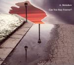

Home Artist links

A. Molotkov - Can You Stay Forever?
| Artist: | A. Molotkov |
| Title: | Can You Stay Forever? |
| Label: | Self produced |
| Length(s): | 62 minutes |
| Year(s) of release: | 2004 |
| Month of review: | [10/2005] |
Line up
Carol Alban - flute
Peter Altenberg - sarangi, tabla
Cindy Lubar Bishop - spoken voice, coughs, sighs
Dan Cantrell - accordion, saw, throat singing
Joshua Gest - electric sitar
Morgan Guberman - contrabass
Alexander Kort - cello, electric cello
Brad Mossman - didgeridoo, mouth harp
Zachary Pitt-Smith - saxophones, pifano
S.B. Reda - spoken voice, electric guitar, bass
Joseph Rigan - steel guitars
Lila Sklar - violins
Azi Vajravai - zurna, bansuri
Annie Vox - spoken voice
David Wilson - baroque violin
Pamela Zero - spoken voice, vocals, guitar, vacuum cleaner, tambura
A. Molotkov - spoken voice, duduk, vocals, recorder, bengali flute, plucked violin, keyboards, guitar, drums, percussion
Tracks
| 1) | Invited | 1.51
|
| 2) | Waiting | 0.18
|
| 3) | Passenger | 1.59
|
| 4) | Forever | 0.04
|
| 5) | Gone | 2.47
|
| 6) | Bleeding | 1.49
|
| 7) | The Dead | 1.43
|
| 8) | Unwritten | 0.09
|
| 9) | Forever | 0.16
|
| 10) | One | 2.13
|
| 11) | Waiting | 0.38
|
| 12) | Now | 0.17
|
| 13) | Backwards | 2.14
|
| 14) | Today | 0.55
|
| 15) | Unanswered | 3.57
|
| 16) | Still | 1.49
|
| 17) | Face | 2.57
|
| 18) | Sensation | 1.55
|
| 19) | Edge | 1.23
|
| 20) | Waiting | 0.38
|
| 21) | Exist | 1.17
|
| 22) | Never | 1.40
|
| 23) | Death | 3.07
|
| 24) | Conscious | 1.46
|
| 25) | Forever | 0.34
|
| 26) | Missing | 2.12
|
| 27) | Unanswered | 2.10
|
| 28) | Questions | 3.37
|
| 29) | Apart | 1.25
|
| 30) | The Dead | 4.00
|
| 31) | Waiting | 1.49
|
| 32) | Invited | 1.59
|
| 33) | Follow | 0.51
|
| 34) | Forever | 2.13
|
Summary
Putting a strain on my typing endurance, this is an album by A. Molotkov
of avant band Discord Aggregate. He seems to use the same scattered song style as on the
previous D.A. disc. Fortunately, he kept the titles themselves short.
He also hosts many people on many many instruments.
The cd is packaged in an extensive digipack. Very nice.
The music
Compared to Discord Aggregate, Invited sounds quite musical, but still there
is a certain amount of weirdness. The violin is rather important on this track
as is the sampling and percussion. The spoken words add to the atmosphere, which is nice. You may compare that to the spoken word Laurie Anderson
(Ugly One With The Jewels).
Passenger continues that line of sampled words, strung together to form
a certain meaning, but sounding accidental. Samples and the like are combined
to form some kind of composition, which sounds very much pieced together.
A totally different way of making music, than the band format to which
most readers will be used.
Gone has fast acoustics, sitar and a sense of urgency. The spoken words
continue telling a story of a kind. I am the kind of person who tends
not to notice the words too much, trying to focus more on the impression
it evokes. The vocals effects on Bleeding can be rather estranging and
tend to give me hyperventilation with these people exhaling all the time.
Well, with this many tracks to go, do you expect me to go through them one
by one? I hope not, because I am not going to. Not because I do not like
the music, but simply because structurally and in terms of mood the
music is quite similar throughout. So let us skip to the...
Conclusion
After this many tracks, the end conclusion is clear. The music made here
is more like a combined art form than simply playing in a band and rocking
out right. In fact, nobody rocks. There are stories told in a spoken voice,
melodies played, fragments heard, (vocal) samples repeated and I guess there
is also plenty of improvisation involved. The overall feel I something in between Laurie Anderson's The Ugly One With The Jewels and Peter Gabriel's soundtrack for The Last Temptation Of Christ with plenty of ethnic elements
and occasional freejazz. The result is an unobtrusive avant garde, which can sound disjointed and estranging, but which does have a warm and intimate atmosphere throughout.
© Jurriaan Hage